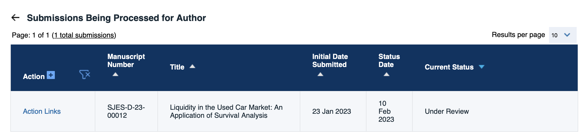
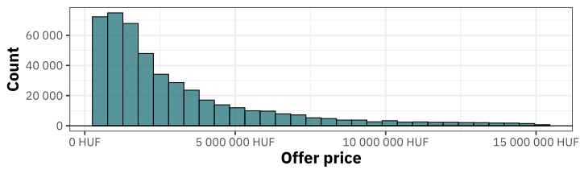
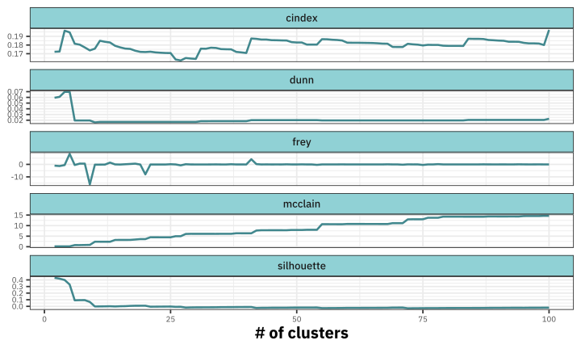
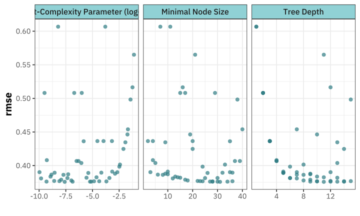
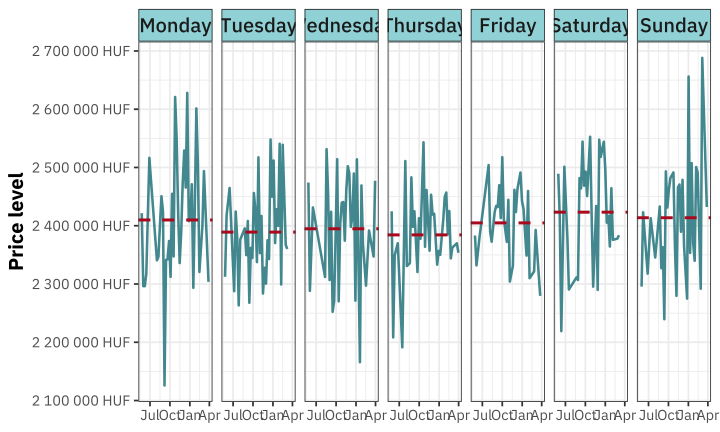
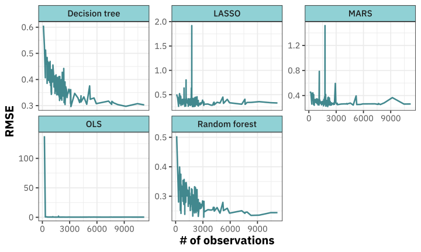

Daily inflation for used vehicles in Hungary
Mixed clustering methods to produce the representative consumer basket
Marcell Granat, Peter Vekas
14th May, 2023
Introduction
Motivation
Modern technologies allow for better statistical analysis of economic indicators like inflation (Cavallo and Rigobon 2016)
The car is a significant part of the consumption basket, accounting for 5% in Hungary (Hungarian Central Statistical Office 2022)
This research aims to provide a model framework for a daily inflation index for the car market
Where are we?
This is the second research project focusing on used cars
The first one is current under review at Swiss Journal of Economics and Statistics (Q1)
Where are we?
This is the second research project focusing on used cars
The first one is current under review at Swiss Journal of Economics and Statistics (Q1)

Challenges in Creating a Daily Inflation Index for Cars
- Cars are heterogeneous. They have countless properties that vary (Similar to housing)
Important Criteria for an Inflation Index
Based on Mark and Goldberg (1984, 31):
Conceptually sound
Administratively simple
Reasonably stable and not overly dependent on changes in transactions or samples
We defined one extra for a daily index
- Must be robust to new observations
Methodology for Creating the Index
Use clustering procedures to create a representative basket of cars
Build multiple models (OLS, Random forest, …) to estimate prices of vehicles in the basket
Apply adjustments for weekly and monthly seasonality (WIP)
Data
Downloaded data of cars available on the website hasznaltauto.hu daily for 10 months starting in May of 2022
Assumption
Grouped vehicles by the day they were sold, assuming that if a car is no longer available on the website, then it has been sold for the last indicated price
Advantages of Online-based Inflation Calculation
Cost reduction compared to traditional methods
No censored price spells (Cavallo and Rigobon 2016)
Advantages of Online-based Inflation Calculation
Cost reduction compared to traditional methods
No censored price spells (Cavallo and Rigobon 2016)
Bargaining
Bargaining may cause some inaccuracy in our index since we derive it from offer prices. But if this amount is time-invariant, then the comparison of the price level between periods (inflation) may remain accurate.
Cleaning Steps and Variables
#> # A tibble: 470,298 × 121
#> id date price brand allapot kivitel ajtok_szama
#> <chr> <date> <int> <fct> <fct> <fct> <fct>
#> 1 10020… 2021-11-05 1.06e7 bmw Normál Városi… 5
#> 2 10058… 2021-12-31 1.00e6 opel Normál Kombi 5
#> 3 10126… 2021-07-13 1.30e6 opel Kitűnő Egyterű 5
#> 4 10316… 2021-07-13 8.99e5 citr… Normál Egyterű 5
#> # ℹ 470,294 more rows
#> # ℹ 114 more variables: szin <fct>, karpit_szine_1 <fct>,
#> # uzemanyag <fct>, henger_elrendezes <fct>, hajtas <fct>,
#> # sebessegvalto_fajtaja <fct>, okmanyok_jellege <fct>,
#> # muszaki_vizsga_ervenyes <fct>, klima_fajtaja <fct>,
#> # karpit_szine_2 <fct>, teli_gumi_meret <fct>,
#> # teto <fct>, hatso_nyari_gumi_meret <fct>, …- Variables with a high number of possible values but do not occur daily were classified into the “other” category (e.g. rare brands)
Cleaning Steps and Variables
Variables with a high number of possible values but do not occur daily were classified into the “other” category (e.g. rare brands)
Offer prices show positive skew, so predictive models were built in a log-lin form

Methodology
- Constructing a price index for heterogeneous goods is challenging
- Numerous methodologies to control for quality changes, but no generally appropriate procedure
- When creating a daily frequency index, the selection of a quality-adjustment methodology is crucial
Two Main Approaches for Heterogeneous Goods1
- Repeat sales
-
Uses a fraction of data that are sold in both compared periods.
- Hedonic regression
-
Model contains periodic dummy variables for quality-adjusted price change
Issues with These Approaches
Repeat sales:
- Fraction of repeat sales are close to zero.
Hedonic regression:
Model needs to be re-estimated if new observations are added (the model and former estimations change)
Assumes utility of certain characteristics is constant over time, which is not true for the car market (Requena-Silvente and Walker 2006)
Our Approach
Forming submarkets that contain homogeneous observations (clustering)
Building predictive regression models using the sold cars for each day
Derive the price level based on the predicted price of the cluster centres’
Our Approach
Forming submarkets that contain homogeneous observations (clustering)
Building predictive regression models using the sold cars for each day
Derive the price level based on the predicted price of the cluster centres’
Criteria for Model Selection
- Good predictive ability (average \(R^2\) on the daily data)
- Reasonably low resulted wiggliness (sum of squares of the second derivative of the price level)
Clustering
Number of clusters
Issue #1
Determining the ideal quantity of clusters in a dataset is ambiguous
Number of clusters
Issue #1
Determining the ideal quantity of clusters in a dataset is ambiguous
- Traditional methodology: estimating with all possible values and pick the best… (At least we tried)
Number of clusters
Issue #1
Determining the ideal quantity of clusters in a dataset is ambiguous
- Traditional methodology: estimating with all possible values and pick the best… (At least we tried)
Issue #2
Time complexity increases proportionally with number of clusters (K-proto)
Estimation time increased by 3 hours for each additional cluster
Number of clusters
Issue #1
Determining the ideal quantity of clusters in a dataset is ambiguous
Charrad et al. (2014) provide a framework based on 30 different indicators
We apply it with hierarchical clustering
Hierarchical clustering
Each data point is initially considered as an individual cluster
Iteratively merges the closest clusters based on a chosen distance metric (Gower-distance)
Hierarchical clustering
Advantage
Regardless of the number of clusters, it builds on the same distance matrix
Iterative merging of clusters is faster compared to other algorithms
Hierarchical clustering
Advantage
Regardless of the number of clusters, it builds on the same distance matrix
Iterative merging of clusters is faster compared to other algorithms
Limitations
High memory demand due to the large computed distance matrix, thus we take a sample of 5,000
Only 5 of the 30 indices suggested by Charrad et al. (2014) can be used for mixed type data
Hierarchical clustering
Optimal number of clusters determined by:
Minimal C-index
Maximal Dunn-index
Maximal Frey-index, but below 1
Minimal McClain index
Maximal Silhouette
Hierarchical clustering

Cluster centres
After we defined the optimal number of clusters we apply the K-proto algorithm to the full dataset.
Advantage
The centres of clusters are existing points and thus they are easy to present what elements are in the produced representative basket.
Cluster centres

Predicting the price level
Predicting the price level
We apply multiple regression models to predict the price level.
- OLS
- LASSO
- Decision tree
- MARS
- Random Forest
Predicting the price level
We apply multiple regression models to predict the price level.
Issue
Traditional cross-validation is inappropriate in the presence of inflation.
Solution: Observations of each day were split into an analysis (3/4) and an assessment set (1/4) using stratified sampling by the price and we tuned the models to reach lowest average RMSE.
Hyperparameter tuning
#> # A tibble: 230 × 2
#> splits id
#> <list> <chr>
#> 1 <split [2029/679]> 2021-05-24
#> 2 <split [1760/589]> 2021-05-25
#> 3 <split [2351/787]> 2021-05-26
#> 4 <split [1925/644]> 2021-05-27
#> 5 <split [1227/412]> 2021-05-28
#> 6 <split [524/176]> 2021-05-29
#> 7 <split [2181/728]> 2021-05-30
#> 8 <split [1419/476]> 2021-05-31
#> 9 <split [1712/572]> 2021-06-01
#> 10 <split [1495/501]> 2021-06-02
#> 11 <split [1574/527]> 2021-06-03
#> 12 <split [1120/376]> 2021-06-04
#> 13 <split [1158/388]> 2021-06-05
#> 14 <split [1845/618]> 2021-06-06
#> 15 <split [3945/1316]> 2021-06-07
#> 16 <split [3107/1037]> 2021-06-10
#> 17 <split [2661/890]> 2021-06-12
#> 18 <split [1628/544]> 2021-06-14
#> 19 <split [1616/540]> 2021-06-15
#> 20 <split [3420/1141]> 2021-06-16
#> 21 <split [7838/2615]> 2021-06-18
#> 22 <split [2319/774]> 2021-06-24
#> 23 <split [581/197]> 2021-06-26
#> 24 <split [1746/584]> 2021-06-27
#> 25 <split [3185/1064]> 2021-06-28
#> 26 <split [8396/2801]> 2021-07-01
#> 27 <split [4257/1420]> 2021-07-06
#> 28 <split [723/243]> 2021-07-10
#> 29 <split [2329/778]> 2021-07-11
#> 30 <split [5729/1912]> 2021-07-13
#> 31 <split [1209/406]> 2021-07-15
#> 32 <split [3185/1063]> 2021-07-17
#> 33 <split [5892/1966]> 2021-07-20
#> 34 <split [1500/502]> 2021-07-27
#> 35 <split [1151/386]> 2021-07-29
#> 36 <split [822/276]> 2021-07-30
#> 37 <split [523/176]> 2021-08-01
#> 38 <split [1428/479]> 2021-08-02
#> 39 <split [1852/620]> 2021-08-03
#> 40 <split [1065/358]> 2021-08-05
#> 41 <split [3163/1057]> 2021-08-06
#> 42 <split [1221/409]> 2021-08-09
#> 43 <split [2930/980]> 2021-08-11
#> 44 <split [3070/1025]> 2021-08-13
#> 45 <split [1986/665]> 2021-08-16
#> 46 <split [1038/347]> 2021-08-18
#> 47 <split [1866/623]> 2021-08-19
#> 48 <split [302/103]> 2021-08-21
#> 49 <split [600/204]> 2021-08-22
#> 50 <split [2322/775]> 2021-08-23
#> 51 <split [754/253]> 2021-08-24
#> 52 <split [1309/439]> 2021-08-25
#> 53 <split [1395/467]> 2021-08-26
#> 54 <split [1332/447]> 2021-08-27
#> 55 <split [954/320]> 2021-08-28
#> 56 <split [694/233]> 2021-08-29
#> 57 <split [1562/522]> 2021-08-30
#> 58 <split [1603/536]> 2021-08-31
#> 59 <split [1446/485]> 2021-09-01
#> 60 <split [1353/453]> 2021-09-02
#> 61 <split [1553/520]> 2021-09-03
#> 62 <split [1052/354]> 2021-09-04
#> 63 <split [724/243]> 2021-09-05
#> 64 <split [1535/513]> 2021-09-06
#> 65 <split [1726/578]> 2021-09-07
#> 66 <split [1392/464]> 2021-09-08
#> 67 <split [1554/520]> 2021-09-09
#> 68 <split [1475/494]> 2021-09-10
#> 69 <split [1095/368]> 2021-09-11
#> 70 <split [667/223]> 2021-09-12
#> 71 <split [1429/480]> 2021-09-13
#> 72 <split [1565/523]> 2021-09-14
#> 73 <split [3895/1300]> 2021-09-15
#> 74 <split [256/87]> 2021-09-17
#> 75 <split [989/332]> 2021-09-18
#> 76 <split [798/268]> 2021-09-19
#> 77 <split [1589/532]> 2021-09-20
#> 78 <split [1480/495]> 2021-09-21
#> 79 <split [1606/536]> 2021-09-22
#> 80 <split [1645/551]> 2021-09-23
#> 81 <split [1867/625]> 2021-09-24
#> 82 <split [1043/349]> 2021-09-25
#> 83 <split [702/236]> 2021-09-26
#> 84 <split [1614/540]> 2021-09-27
#> 85 <split [1623/542]> 2021-09-28
#> 86 <split [1416/473]> 2021-09-29
#> 87 <split [1732/579]> 2021-09-30
#> 88 <split [1444/484]> 2021-10-01
#> 89 <split [1374/460]> 2021-10-02
#> 90 <split [867/292]> 2021-10-03
#> 91 <split [1747/585]> 2021-10-04
#> 92 <split [1639/548]> 2021-10-05
#> 93 <split [1602/536]> 2021-10-06
#> 94 <split [1560/522]> 2021-10-07
#> 95 <split [1558/520]> 2021-10-08
#> 96 <split [1233/413]> 2021-10-09
#> 97 <split [772/259]> 2021-10-10
#> 98 <split [1576/526]> 2021-10-11
#> 99 <split [1613/539]> 2021-10-12
#> 100 <split [6883/2296]> 2021-10-13
#> 101 <split [1381/463]> 2021-10-18
#> 102 <split [1414/473]> 2021-10-19
#> 103 <split [1359/456]> 2021-10-20
#> 104 <split [1124/377]> 2021-10-21
#> 105 <split [1057/354]> 2021-10-22
#> 106 <split [648/219]> 2021-10-23
#> 107 <split [595/200]> 2021-10-24
#> 108 <split [1436/481]> 2021-10-25
#> 109 <split [1367/459]> 2021-10-26
#> 110 <split [1387/464]> 2021-10-27
#> 111 <split [1389/465]> 2021-10-28
#> 112 <split [1356/456]> 2021-10-29
#> 113 <split [1178/396]> 2021-10-30
#> 114 <split [512/172]> 2021-10-31
#> 115 <split [952/321]> 2021-11-01
#> 116 <split [2086/696]> 2021-11-02
#> 117 <split [1513/507]> 2021-11-03
#> 118 <split [1760/588]> 2021-11-04
#> 119 <split [1487/497]> 2021-11-05
#> 120 <split [1180/396]> 2021-11-06
#> 121 <split [862/291]> 2021-11-07
#> 122 <split [1688/565]> 2021-11-08
#> 123 <split [1479/494]> 2021-11-09
#> 124 <split [5451/1819]> 2021-11-10
#> 125 <split [611/205]> 2021-11-14
#> 126 <split [1295/433]> 2021-11-15
#> 127 <split [1315/439]> 2021-11-16
#> 128 <split [1215/407]> 2021-11-17
#> 129 <split [1690/567]> 2021-11-18
#> 130 <split [1430/478]> 2021-11-19
#> 131 <split [1222/409]> 2021-11-20
#> 132 <split [789/266]> 2021-11-21
#> 133 <split [1677/562]> 2021-11-22
#> 134 <split [1576/527]> 2021-11-23
#> 135 <split [1394/466]> 2021-11-24
#> 136 <split [1430/479]> 2021-11-25
#> 137 <split [1461/488]> 2021-11-26
#> 138 <split [1138/381]> 2021-11-27
#> 139 <split [860/289]> 2021-11-28
#> 140 <split [1599/534]> 2021-11-29
#> 141 <split [1278/428]> 2021-11-30
#> 142 <split [1561/523]> 2021-12-01
#> 143 <split [1793/599]> 2021-12-02
#> 144 <split [1864/624]> 2021-12-03
#> 145 <split [1211/405]> 2021-12-04
#> 146 <split [691/232]> 2021-12-05
#> 147 <split [1632/546]> 2021-12-06
#> 148 <split [1563/524]> 2021-12-07
#> 149 <split [1456/488]> 2021-12-08
#> 150 <split [1656/553]> 2021-12-09
#> 151 <split [1364/456]> 2021-12-10
#> 152 <split [1098/368]> 2021-12-11
#> 153 <split [755/254]> 2021-12-12
#> 154 <split [1496/500]> 2021-12-13
#> 155 <split [1494/500]> 2021-12-14
#> 156 <split [5710/1907]> 2021-12-15
#> 157 <split [1324/444]> 2021-12-20
#> 158 <split [1297/435]> 2021-12-21
#> 159 <split [1358/454]> 2021-12-22
#> 160 <split [1273/426]> 2021-12-23
#> 161 <split [428/144]> 2021-12-24
#> 162 <split [376/126]> 2021-12-25
#> 163 <split [430/145]> 2021-12-26
#> 164 <split [1374/461]> 2021-12-27
#> 165 <split [1503/502]> 2021-12-28
#> 166 <split [1232/413]> 2021-12-29
#> 167 <split [1370/459]> 2021-12-30
#> 168 <split [540/184]> 2021-12-31
#> 169 <split [444/150]> 2022-01-01
#> 170 <split [755/253]> 2022-01-02
#> 171 <split [2108/704]> 2022-01-03
#> 172 <split [1762/588]> 2022-01-04
#> 173 <split [1789/598]> 2022-01-05
#> 174 <split [1728/578]> 2022-01-06
#> 175 <split [1572/526]> 2022-01-07
#> 176 <split [1194/400]> 2022-01-08
#> 177 <split [774/259]> 2022-01-09
#> 178 <split [1607/538]> 2022-01-10
#> 179 <split [6213/2073]> 2022-01-11
#> 180 <split [1127/379]> 2022-01-15
#> 181 <split [676/228]> 2022-01-16
#> 182 <split [1331/445]> 2022-01-17
#> 183 <split [1186/396]> 2022-01-18
#> 184 <split [1072/358]> 2022-01-19
#> 185 <split [1220/408]> 2022-01-20
#> 186 <split [1125/377]> 2022-01-21
#> 187 <split [1033/346]> 2022-01-22
#> 188 <split [635/214]> 2022-01-23
#> 189 <split [1238/413]> 2022-01-24
#> 190 <split [1379/461]> 2022-01-25
#> 191 <split [1308/439]> 2022-01-26
#> 192 <split [1668/557]> 2022-01-27
#> 193 <split [1366/457]> 2022-01-28
#> 194 <split [1036/348]> 2022-01-29
#> 195 <split [695/233]> 2022-01-30
#> 196 <split [1388/464]> 2022-01-31
#> 197 <split [1649/551]> 2022-02-01
#> 198 <split [1503/504]> 2022-02-02
#> 199 <split [1440/481]> 2022-02-03
#> 200 <split [1404/470]> 2022-02-04
#> 201 <split [1061/357]> 2022-02-05
#> 202 <split [656/221]> 2022-02-06
#> 203 <split [1176/393]> 2022-02-07
#> 204 <split [2222/744]> 2022-02-08
#> 205 <split [2334/780]> 2022-02-10
#> 206 <split [392/132]> 2022-02-13
#> 207 <split [738/248]> 2022-02-14
#> 208 <split [755/253]> 2022-02-15
#> 209 <split [839/280]> 2022-02-16
#> 210 <split [4443/1483]> 2022-02-17
#> 211 <split [488/165]> 2022-02-24
#> 212 <split [508/172]> 2022-02-25
#> 213 <split [442/149]> 2022-02-26
#> 214 <split [303/104]> 2022-02-27
#> 215 <split [586/197]> 2022-02-28
#> 216 <split [444/150]> 2022-03-01
#> 217 <split [442/148]> 2022-03-02
#> 218 <split [391/132]> 2022-03-03
#> 219 <split [396/134]> 2022-03-04
#> 220 <split [325/110]> 2022-03-05
#> 221 <split [166/57]> 2022-03-06
#> 222 <split [388/131]> 2022-03-07
#> 223 <split [3656/1221]> 2022-03-08
#> 224 <split [243/83]> 2022-03-23
#> 225 <split [247/84]> 2022-03-24
#> 226 <split [417/140]> 2022-03-25
#> 227 <split [85/30]> 2022-03-27
#> 228 <split [445/152]> 2022-03-28
#> 229 <split [261/88]> 2022-03-30
#> 230 <split [400/135]> 2022-03-31Hyperparameter tuning
An example workflow for the estimation (tuned)1:
#> ══ Workflow ════════════════════════════════════════════════
#> Preprocessor: Recipe
#> Model: decision_tree()
#>
#> ── Preprocessor ────────────────────────────────────────────
#> 3 Recipe Steps
#>
#> • step_rm()
#> • step_zv()
#> • step_normalize()
#>
#> ── Model ───────────────────────────────────────────────────
#> Decision Tree Model Specification (regression)
#>
#> Main Arguments:
#> cost_complexity = 2.50100358331955e-08
#> tree_depth = 11
#> min_n = 31
#>
#> Computational engine: rpartHyperparameter tuning

Maximum entropy design-based hyperparameter tuning for decision tree
Model performance
The price level
We estimated the price of each item in the “representative basket” (cluster centres)
Calculate the weighted mean of them (w = # of cars in the cluster)
The price level
The price level
The wiggliness of the estimated price level is still high.
Possible reasons:
- Seasonality
- # of observations are not sufficient to estimate the price level accurately
Seasonality

# of observations

Comparing to the official data

Others also liked 👍
XI Ph.D Workshop of the Hungarian Society of Economics